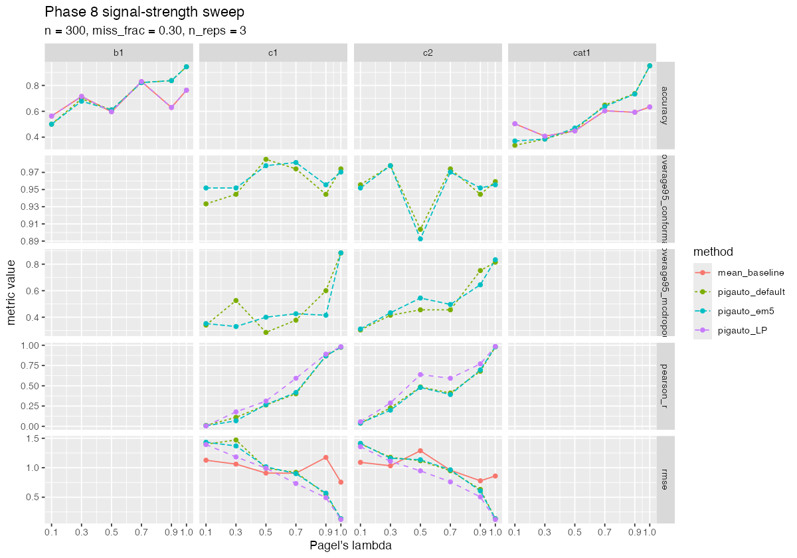

Config: n = 300 species, 3 reps × 6 lambda levels × 4 methods.
Total wall time: 61.3 min.

| method | lambda | trait | metric | value | rounded |
|---|---|---|---|---|---|
| mean_baseline | 0.1 | b1 | accuracy | 0.562962963 | 0.563 |
| pigauto_default | 0.1 | b1 | accuracy | 0.514814815 | 0.515 |
| pigauto_em5 | 0.1 | b1 | accuracy | 0.518518519 | 0.519 |
| pigauto_LP | 0.1 | b1 | accuracy | 0.562962963 | 0.563 |
| mean_baseline | 0.3 | b1 | accuracy | 0.714814815 | 0.715 |
| pigauto_default | 0.3 | b1 | accuracy | 0.696296296 | 0.696 |
| pigauto_em5 | 0.3 | b1 | accuracy | 0.677777778 | 0.678 |
| pigauto_LP | 0.3 | b1 | accuracy | 0.714814815 | 0.715 |
| mean_baseline | 0.5 | b1 | accuracy | 0.596296296 | 0.596 |
| pigauto_default | 0.5 | b1 | accuracy | 0.611111111 | 0.611 |
| pigauto_em5 | 0.5 | b1 | accuracy | 0.611111111 | 0.611 |
| pigauto_LP | 0.5 | b1 | accuracy | 0.596296296 | 0.596 |
| mean_baseline | 0.7 | b1 | accuracy | 0.829629630 | 0.830 |
| pigauto_default | 0.7 | b1 | accuracy | 0.822222222 | 0.822 |
| pigauto_em5 | 0.7 | b1 | accuracy | 0.822222222 | 0.822 |
| pigauto_LP | 0.7 | b1 | accuracy | 0.829629630 | 0.830 |
| mean_baseline | 0.9 | b1 | accuracy | 0.629629630 | 0.630 |
| pigauto_default | 0.9 | b1 | accuracy | 0.837037037 | 0.837 |
| pigauto_em5 | 0.9 | b1 | accuracy | 0.837037037 | 0.837 |
| pigauto_LP | 0.9 | b1 | accuracy | 0.629629630 | 0.630 |
| mean_baseline | 1.0 | b1 | accuracy | 0.762962963 | 0.763 |
| pigauto_default | 1.0 | b1 | accuracy | 0.944444444 | 0.944 |
| pigauto_em5 | 1.0 | b1 | accuracy | 0.944444444 | 0.944 |
| pigauto_LP | 1.0 | b1 | accuracy | 0.762962963 | 0.763 |
| pigauto_default | 0.1 | c1 | pearson_r | 0.006031516 | 0.006 |
| pigauto_em5 | 0.1 | c1 | pearson_r | 0.008483019 | 0.008 |
| pigauto_LP | 0.1 | c1 | pearson_r | 0.004408770 | 0.004 |
| pigauto_default | 0.3 | c1 | pearson_r | 0.116602786 | 0.117 |
| pigauto_em5 | 0.3 | c1 | pearson_r | 0.072632797 | 0.073 |
| pigauto_LP | 0.3 | c1 | pearson_r | 0.178563604 | 0.179 |
| pigauto_default | 0.5 | c1 | pearson_r | 0.263854134 | 0.264 |
| pigauto_em5 | 0.5 | c1 | pearson_r | 0.265442139 | 0.265 |
| pigauto_LP | 0.5 | c1 | pearson_r | 0.310501183 | 0.311 |
| pigauto_default | 0.7 | c1 | pearson_r | 0.416257597 | 0.416 |
| pigauto_em5 | 0.7 | c1 | pearson_r | 0.414293088 | 0.414 |
| pigauto_LP | 0.7 | c1 | pearson_r | 0.593205078 | 0.593 |
| pigauto_default | 0.9 | c1 | pearson_r | 0.870570210 | 0.871 |
| pigauto_em5 | 0.9 | c1 | pearson_r | 0.873599417 | 0.874 |
| pigauto_LP | 0.9 | c1 | pearson_r | 0.891305079 | 0.891 |
| pigauto_default | 1.0 | c1 | pearson_r | 0.977024061 | 0.977 |
| pigauto_em5 | 1.0 | c1 | pearson_r | 0.977024126 | 0.977 |
| pigauto_LP | 1.0 | c1 | pearson_r | 0.981715344 | 0.982 |
| mean_baseline | 0.1 | c1 | rmse | 1.127531286 | 1.128 |
| pigauto_default | 0.1 | c1 | rmse | 1.392647244 | 1.393 |
| pigauto_em5 | 0.1 | c1 | rmse | 1.428143111 | 1.428 |
| pigauto_LP | 0.1 | c1 | rmse | 1.398580916 | 1.399 |
| mean_baseline | 0.3 | c1 | rmse | 1.061349138 | 1.061 |
| pigauto_default | 0.3 | c1 | rmse | 1.372511729 | 1.373 |
| pigauto_em5 | 0.3 | c1 | rmse | 1.375170265 | 1.375 |
| pigauto_LP | 0.3 | c1 | rmse | 1.184091492 | 1.184 |
| mean_baseline | 0.5 | c1 | rmse | 0.909594387 | 0.910 |
| pigauto_default | 0.5 | c1 | rmse | 0.994466816 | 0.994 |
| pigauto_em5 | 0.5 | c1 | rmse | 1.017992814 | 1.018 |
| pigauto_LP | 0.5 | c1 | rmse | 0.991954158 | 0.992 |
| mean_baseline | 0.7 | c1 | rmse | 0.907692165 | 0.908 |
| pigauto_default | 0.7 | c1 | rmse | 0.911128741 | 0.911 |
| pigauto_em5 | 0.7 | c1 | rmse | 0.909583307 | 0.910 |
| pigauto_LP | 0.7 | c1 | rmse | 0.728430703 | 0.728 |
| mean_baseline | 0.9 | c1 | rmse | 1.174466875 | 1.174 |
| pigauto_default | 0.9 | c1 | rmse | 0.524945405 | 0.525 |
| pigauto_em5 | 0.9 | c1 | rmse | 0.518112912 | 0.518 |
| pigauto_LP | 0.9 | c1 | rmse | 0.490949105 | 0.491 |
| mean_baseline | 1.0 | c1 | rmse | 0.755339777 | 0.755 |
| pigauto_default | 1.0 | c1 | rmse | 0.134908408 | 0.135 |
| pigauto_em5 | 1.0 | c1 | rmse | 0.134908296 | 0.135 |
| pigauto_LP | 1.0 | c1 | rmse | 0.121376706 | 0.121 |
| pigauto_default | 0.1 | c2 | pearson_r | 0.040917754 | 0.041 |
| pigauto_em5 | 0.1 | c2 | pearson_r | 0.037805576 | 0.038 |
| pigauto_LP | 0.1 | c2 | pearson_r | 0.056011901 | 0.056 |
| pigauto_default | 0.3 | c2 | pearson_r | 0.241540315 | 0.242 |
| pigauto_em5 | 0.3 | c2 | pearson_r | 0.180243824 | 0.180 |
| pigauto_LP | 0.3 | c2 | pearson_r | 0.287661757 | 0.288 |
| pigauto_default | 0.5 | c2 | pearson_r | 0.490532750 | 0.491 |
| pigauto_em5 | 0.5 | c2 | pearson_r | 0.493320557 | 0.493 |
| pigauto_LP | 0.5 | c2 | pearson_r | 0.637697676 | 0.638 |
| pigauto_default | 0.7 | c2 | pearson_r | 0.415161208 | 0.415 |
| pigauto_em5 | 0.7 | c2 | pearson_r | 0.414487706 | 0.414 |
| pigauto_LP | 0.7 | c2 | pearson_r | 0.591511662 | 0.592 |
| pigauto_default | 0.9 | c2 | pearson_r | 0.686328222 | 0.686 |
| pigauto_em5 | 0.9 | c2 | pearson_r | 0.694681631 | 0.695 |
| pigauto_LP | 0.9 | c2 | pearson_r | 0.769332287 | 0.769 |
| pigauto_default | 1.0 | c2 | pearson_r | 0.982347476 | 0.982 |
| pigauto_em5 | 1.0 | c2 | pearson_r | 0.982347463 | 0.982 |
| pigauto_LP | 1.0 | c2 | pearson_r | 0.985455205 | 0.985 |
| mean_baseline | 0.1 | c2 | rmse | 1.091263981 | 1.091 |
| pigauto_default | 0.1 | c2 | rmse | 1.400421093 | 1.400 |
| pigauto_em5 | 0.1 | c2 | rmse | 1.411376572 | 1.411 |
| pigauto_LP | 0.1 | c2 | rmse | 1.349864581 | 1.350 |
| mean_baseline | 0.3 | c2 | rmse | 1.033408062 | 1.033 |
| pigauto_default | 0.3 | c2 | rmse | 1.164722752 | 1.165 |
| pigauto_em5 | 0.3 | c2 | rmse | 1.186607774 | 1.187 |
| pigauto_LP | 0.3 | c2 | rmse | 1.112683427 | 1.113 |
| mean_baseline | 0.5 | c2 | rmse | 1.288558053 | 1.289 |
| pigauto_default | 0.5 | c2 | rmse | 1.104310666 | 1.104 |
| pigauto_em5 | 0.5 | c2 | rmse | 1.113115716 | 1.113 |
| pigauto_LP | 0.5 | c2 | rmse | 0.949619298 | 0.950 |
| mean_baseline | 0.7 | c2 | rmse | 0.957991261 | 0.958 |
| pigauto_default | 0.7 | c2 | rmse | 0.930735480 | 0.931 |
| pigauto_em5 | 0.7 | c2 | rmse | 0.942717636 | 0.943 |
| pigauto_LP | 0.7 | c2 | rmse | 0.763443753 | 0.763 |
| mean_baseline | 0.9 | c2 | rmse | 0.778630062 | 0.779 |
| pigauto_default | 0.9 | c2 | rmse | 0.618487582 | 0.618 |
| pigauto_em5 | 0.9 | c2 | rmse | 0.603096110 | 0.603 |
| pigauto_LP | 0.9 | c2 | rmse | 0.506981003 | 0.507 |
| mean_baseline | 1.0 | c2 | rmse | 0.859549374 | 0.860 |
| pigauto_default | 1.0 | c2 | rmse | 0.131114882 | 0.131 |
| pigauto_em5 | 1.0 | c2 | rmse | 0.131114911 | 0.131 |
| pigauto_LP | 1.0 | c2 | rmse | 0.121001429 | 0.121 |
| mean_baseline | 0.1 | cat1 | accuracy | 0.503703704 | 0.504 |
| pigauto_default | 0.1 | cat1 | accuracy | 0.337037037 | 0.337 |
| pigauto_em5 | 0.1 | cat1 | accuracy | 0.370370370 | 0.370 |
| pigauto_LP | 0.1 | cat1 | accuracy | 0.503703704 | 0.504 |
| mean_baseline | 0.3 | cat1 | accuracy | 0.407407407 | 0.407 |
| pigauto_default | 0.3 | cat1 | accuracy | 0.385185185 | 0.385 |
| pigauto_em5 | 0.3 | cat1 | accuracy | 0.385185185 | 0.385 |
| pigauto_LP | 0.3 | cat1 | accuracy | 0.407407407 | 0.407 |
| mean_baseline | 0.5 | cat1 | accuracy | 0.448148148 | 0.448 |
| pigauto_default | 0.5 | cat1 | accuracy | 0.455555556 | 0.456 |
| pigauto_em5 | 0.5 | cat1 | accuracy | 0.466666667 | 0.467 |
| pigauto_LP | 0.5 | cat1 | accuracy | 0.448148148 | 0.448 |
| mean_baseline | 0.7 | cat1 | accuracy | 0.603703704 | 0.604 |
| pigauto_default | 0.7 | cat1 | accuracy | 0.648148148 | 0.648 |
| pigauto_em5 | 0.7 | cat1 | accuracy | 0.637037037 | 0.637 |
| pigauto_LP | 0.7 | cat1 | accuracy | 0.603703704 | 0.604 |
| mean_baseline | 0.9 | cat1 | accuracy | 0.592592593 | 0.593 |
| pigauto_default | 0.9 | cat1 | accuracy | 0.737037037 | 0.737 |
| pigauto_em5 | 0.9 | cat1 | accuracy | 0.733333333 | 0.733 |
| pigauto_LP | 0.9 | cat1 | accuracy | 0.592592593 | 0.593 |
| mean_baseline | 1.0 | cat1 | accuracy | 0.633333333 | 0.633 |
| pigauto_default | 1.0 | cat1 | accuracy | 0.951851852 | 0.952 |
| pigauto_em5 | 1.0 | cat1 | accuracy | 0.951851852 | 0.952 |
| pigauto_LP | 1.0 | cat1 | accuracy | 0.633333333 | 0.633 |